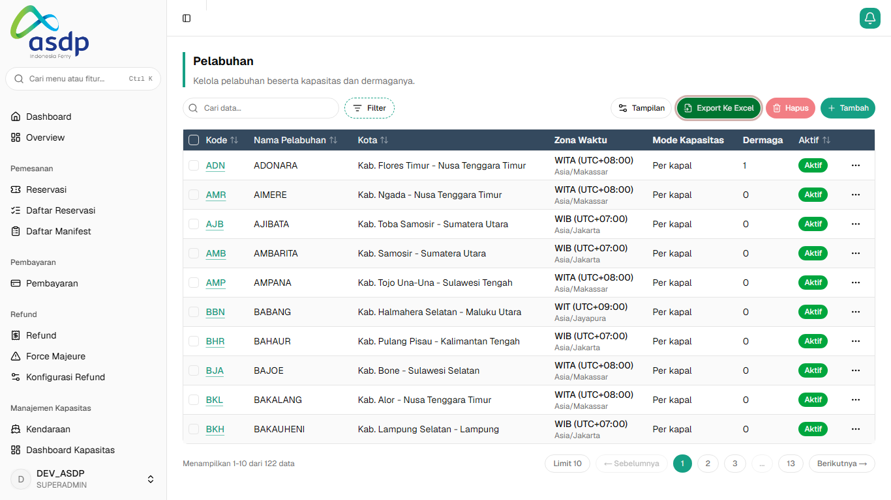

TEMUAN Pelabuhan — daftar > [Temuan] PL-T02 tombol "Export Ke Excel" seharusnya menghasilkan file Excel (.xlsx)
UI\pelabuhan.spec.ts · PEMERIKSAAN
PL-T02 — Tombol "Export Ke Excel" mengunduh file CSV, bukan Excel [perlu konfirmasi]
Langkah:
1. Buka menu Master data → Pelabuhan (/outlets)
2. Klik "Export Ke Excel"
Ekspektasi: File yang terunduh berformat Excel (.xlsx), sesuai label tombol
Aktual: File yang terunduh: "outlets_export_2026-11-13_09-02-49.csv"

Bukti screenshot (klik untuk memperbesar) — file: hasil/bukti/PL-T02_20261113-090310.png
Cetakan test
[TEMUAN] PL-T02 — Tombol "Export Ke Excel" mengunduh file CSV, bukan Excel [perlu konfirmasi]
Langkah:
1. Buka menu Master data → Pelabuhan (/outlets)
2. Klik "Export Ke Excel"
Ekspektasi: File yang terunduh berformat Excel (.xlsx), sesuai label tombol
Aktual: File yang terunduh: "outlets_export_2026-11-13_09-02-49.csv"
(bukti: hasil\bukti\PL-T02_20261113-090310.png)
TEMUAN Pelabuhan — form Tambah (tanpa menyimpan) > [Temuan] PL-T01 mode "Pelabuhan 24 jam": kapasitas harian kosong seharusnya ditolak di langkah 2
UI\pelabuhan.spec.ts · PEMERIKSAAN
PL-T01 — Mode Pelabuhan 24 jam bisa lanjut ke langkah 3 walau kapasitas harian kosong
Langkah:
1. Buka menu Master data → Pelabuhan (/outlets)
2. Klik "Tambah"
3. Isi Kode, Nama, Kota → Selanjutnya
4. Pilih mode "Pelabuhan 24 jam", biarkan kapasitas harian kosong → Selanjutnya
Ekspektasi: Tetap di langkah 2/3 dengan pesan wajib diisi pada Kapasitas penumpang harian & Kapasitas kendaraan harian (SUP)
Aktual: Pindah ke langkah 3/3; error baru muncul setelah klik Simpan di langkah terakhir

Bukti screenshot (klik untuk memperbesar) — file: hasil/bukti/PL-T01_20261113-090356.png
Cetakan test
[TEMUAN] PL-T01 — Mode Pelabuhan 24 jam bisa lanjut ke langkah 3 walau kapasitas harian kosong
Langkah:
1. Buka menu Master data → Pelabuhan (/outlets)
2. Klik "Tambah"
3. Isi Kode, Nama, Kota → Selanjutnya
4. Pilih mode "Pelabuhan 24 jam", biarkan kapasitas harian kosong → Selanjutnya
Ekspektasi: Tetap di langkah 2/3 dengan pesan wajib diisi pada Kapasitas penumpang harian & Kapasitas kendaraan harian (SUP)
Aktual: Pindah ke langkah 3/3; error baru muncul setelah klik Simpan di langkah terakhir
(bukti: hasil\bukti\PL-T01_20261113-090356.png)
Tidak ada test yang gagal.
Tidak ada gangguan koneksi.
Tidak ada.
| No | Berkas | Test | Jenis | Status | Detik |
|---|
| 1 | UI\pelabuhan.spec.ts | Pelabuhan — daftar > [Positif] PL-01 halaman tampil: judul, toolbar, kolom tabel, ringkasan data |
PEMERIKSAAN | LULUS | 5.8 |
| 2 | UI\pelabuhan.spec.ts | Pelabuhan — daftar > [Positif] PL-02 cari berdasarkan kode → hanya baris yang cocok |
PEMERIKSAAN | LULUS | 2.9 |
| 3 | UI\pelabuhan.spec.ts | Pelabuhan — daftar > [Positif] PL-03 cari berdasarkan nama (huruf kecil) → tetap ketemu |
PEMERIKSAAN | LULUS | 3.0 |
| 4 | UI\pelabuhan.spec.ts | Pelabuhan — daftar > [Negatif] PL-04 cari kata yang tidak ada → tabel kosong, 0 data |
PEMERIKSAAN | LULUS | 2.5 |
| 5 | UI\pelabuhan.spec.ts | Pelabuhan — daftar > [Edge] PL-05 cari dengan karakter khusus → tidak error, 0 data |
PEMERIKSAAN | LULUS | 2.8 |
| 6 | UI\pelabuhan.spec.ts | Pelabuhan — daftar > [Positif] PL-06 sort Kode: klik 1x A→Z, klik 2x Z→A |
PEMERIKSAAN | LULUS | 3.0 |
| 7 | UI\pelabuhan.spec.ts | Pelabuhan — daftar > [Positif] PL-07 Limit 25 → 25 baris & ringkasan 1-25 |
PEMERIKSAAN | LULUS | 2.7 |
| 8 | UI\pelabuhan.spec.ts | Pelabuhan — daftar > [Positif] PL-08 pindah halaman: Berikutnya → 11-20, Sebelumnya aktif |
PEMERIKSAAN | LULUS | 2.3 |
| 9 | UI\pelabuhan.spec.ts | Pelabuhan — daftar > [Positif] PL-09 filter Tidak Aktif → semua baris "Tidak Aktif" |
PEMERIKSAAN | LULUS | 2.3 |
| 10 | UI\pelabuhan.spec.ts | Pelabuhan — daftar > [Positif] PL-10 filter Aktif → tidak ada baris "Tidak Aktif" |
PEMERIKSAAN | LULUS | 2.4 |
| 11 | UI\pelabuhan.spec.ts | Pelabuhan — daftar > [Positif] PL-11 Tampilan: sembunyikan kolom Kota → kolom hilang |
PEMERIKSAAN | LULUS | 4.9 |
| 12 | UI\pelabuhan.spec.ts | Pelabuhan — daftar > [Positif] PL-12 Export → file terunduh & berisi data pelabuhan |
PEMERIKSAAN | LULUS | 7.5 |
| 13 | UI\pelabuhan.spec.ts | Pelabuhan — daftar > [Temuan] PL-T02 tombol "Export Ke Excel" seharusnya menghasilkan file Excel (.xlsx) |
PEMERIKSAAN | LULUS | 20.9 |
| 14 | UI\pelabuhan.spec.ts | Pelabuhan — daftar > [Positif] PL-13 zona waktu sesuai provinsi (contoh: NTT = WITA, Sumut = WIB) |
PEMERIKSAAN | LULUS | 2.4 |
| 15 | UI\pelabuhan.spec.ts | Pelabuhan — daftar > [Negatif] PL-14 Hapus massal → Batal → data tetap ada |
PEMERIKSAAN | LULUS | 2.3 |
| 16 | UI\pelabuhan.spec.ts | Pelabuhan — form Tambah (tanpa menyimpan) > [Negatif] PL-15 langkah 1 kosong → Selanjutnya → 3 pesan wajib diisi |
PEMERIKSAAN | LULUS | 2.8 |
| 17 | UI\pelabuhan.spec.ts | Pelabuhan — form Tambah (tanpa menyimpan) > [Edge] PL-16 batas panjang: Kode 50, Nama 100, Alamat 150 karakter |
PEMERIKSAAN | LULUS | 4.3 |
| 18 | UI\pelabuhan.spec.ts | Pelabuhan — form Tambah (tanpa menyimpan) > [Positif] PL-17 pilih kota → provinsi tampil di keterangan |
PEMERIKSAAN | LULUS | 5.7 |
| 19 | UI\pelabuhan.spec.ts | Pelabuhan — form Tambah (tanpa menyimpan) > [Negatif] PL-18 kuota penumpang gratis negatif → ditolak |
PEMERIKSAAN | LULUS | 4.8 |
| 20 | UI\pelabuhan.spec.ts | Pelabuhan — form Tambah (tanpa menyimpan) > [Positif] PL-19 mode default "Per kapal"; pilih "Pelabuhan 24 jam" → muncul 2 kolom kapasitas harian |
PEMERIKSAAN | LULUS | 4.6 |
| 21 | UI\pelabuhan.spec.ts | Pelabuhan — form Tambah (tanpa menyimpan) > [Positif] PL-20 Batal menutup form tanpa menyimpan |
PEMERIKSAAN | LULUS | 2.7 |
| 22 | UI\pelabuhan.spec.ts | Pelabuhan — form Tambah (tanpa menyimpan) > [Positif] PL-21 dermaga baru: kode otomatis ber-awalan kode pelabuhan, nama wajib |
PEMERIKSAAN | LULUS | 4.2 |
| 23 | UI\pelabuhan.spec.ts | Pelabuhan — form Tambah (tanpa menyimpan) > [Positif] PL-22 Ubah Data: kode terkunci, judul memuat nama pelabuhan |
PEMERIKSAAN | LULUS | 2.5 |
| 24 | UI\pelabuhan.spec.ts | Pelabuhan — form Tambah (tanpa menyimpan) > [Temuan] PL-T01 mode "Pelabuhan 24 jam": kapasitas harian kosong seharusnya ditolak di langkah 2 |
PEMERIKSAAN | LULUS | 5.3 |